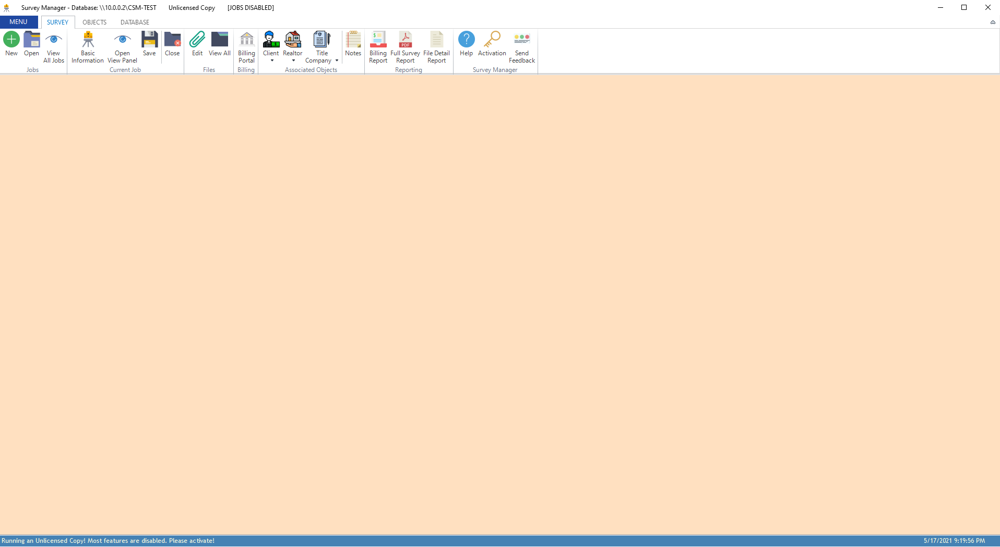
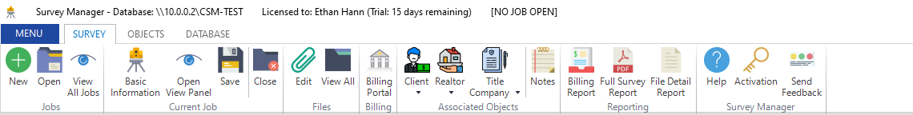
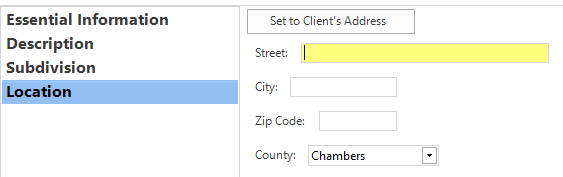
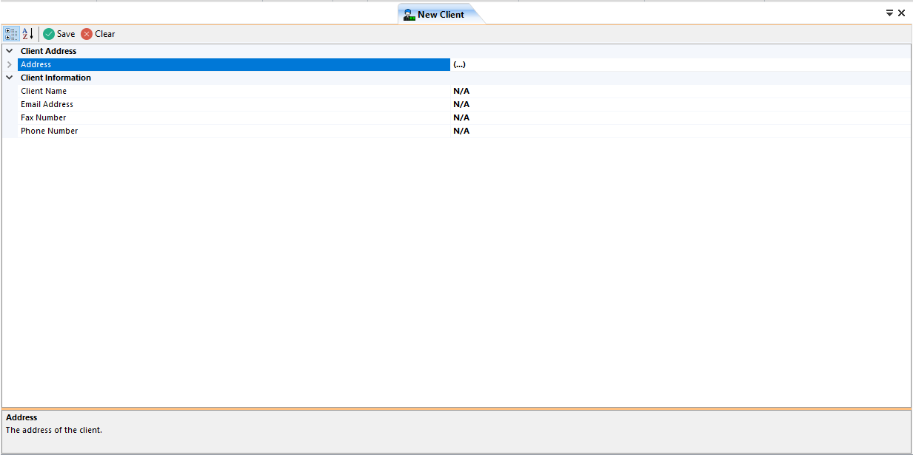

Getting Started¶
This section will show you how to quickly get started with creating and editing survey jobs. It will also show you how to setup the initial environment needed for using the application.
First Launch and Setup¶
The first launch of the application may look something like this:
{kind=link}
If the product is unlicensed, click the Activation button on the main ribbon and enter your product key. If the product key was valid, the application will be licensed and
all features will be enabled. If you don’t have a product key, email ethan.hann@protonmail.com to request one (either a trial key or a paid key).
After successfully licensing the application, the title bar will change to denote the product’s current status:
{kind=link}
Before anything can be done, you must connect to a valid Database on a server. To connect, navigate to the Database tab on the ribbon and click the Connection Settings button:
{kind=link}
This will open a dialog where you can enter the connection details. Important: Only one of these connection dialogs can be opened at a time. Simply fill out the required fields to connect to a database.
Server: the IP or hostname of the database server
Port: the port number the server listens on for database connections
Database: the name of the database to connect to
Username: a database user who has permissions to select, insert, update, and delete from the database
Password: the password of the database user

Once all required fields are entered, click the Test Connection button in the title bar of the dialog to begin connecting to the database. If no error occured, a new button will appear Finish
that will close the dialog and save the connection.
{kind=link}
Creating and Editing a Survey Job¶
Click the
Newbutton under the Jobs group and enter a job number. This job number is plain text and can be anything you wish. Two different jobs cannot have the same job number.After the job has been created, the title bar (at the top) and the status bar (at the bottom) of the window will change to correspond to the current state of the application:
{kind=link}
{kind=link}
Important: All changes to the currently opened job are only local, meaning they do not become persistently stored in the database until the Save button is clicked!
Editing the Job’s Information¶
Once a job has been created, the next step is to edit it’s basic information and add objects to it. Click the Basic Information button under the Current Job group. This will open the
page that allows you to edit some basic information about the currently opened survey job. Simply fill out all of the fields that are required (marked with a red *). The currently selected
field is highlighted yellow to make navigation easier.
{kind=link}
While most of the fields here are self-explanatory, the last sub-page (Location) has some extra functionality. If a Client object has been set (and the survey’s location is the same as the Client’s address), you
can click the Set to Client's Address button to automatically set the location for the job.
However, if no Client has been set, you will get a pop-up letting you know you must set a Client before you can use that feature. As of now, all addresses and locations are assumed to be in the state of Texas and only four Counties are supported: Chambers, Liberty, Harris, and Galveston.
{kind=link}
Once all information is entered, simply click the Save and Update button on the top right of the Job Information page. This will save the changes locally and update the open job.
{kind=link}
At any time, you can open a view panel that will show an overview of the currently opened job. This panel opens to the right side and only one panel can be opened at a time. To open it, click
the Open View Panel button under the Current Job group on the Survey Ribbon tab. This view does not update in real time, however it can be refreshed by clicking the Refresh button on the panel. Certain fields
in the View Panel are also editable and provide a quick shortcut to edit some attributes of the job.
{kind=link}
Adding a Client Object¶
Let’s now add a Client to our new survey job. To do this, click the drop-down arrow underneath the Client button in the Associated Objects group and then click the New... button.
{kind=link}
This will open a new page which allows you to edit the Client’s details. It is on this page where you can enter the client’s address, name, email address, fax number, and phone number. To enter the address, expand the Address group and enter the required fields. It is worth noting that you can press the <TAB> key on your keyboard to navigate to the next field. This works most places where you enter data.
{kind=link}
After entering all of the required data, simply click the Save button on the page. The client will be inserted into the database and you will be asked if you wish to associate the new client
with the currently opened job. In this case, click Yes. If you choose no, you can still add the client to the job a different way. You don’t have to recreate the object again.
You will also be asked if you wish to Create Another?. If you want to create multiple clients in a row, you can click Yes; otherwise, click No to close the page.

Important
This workflow is the same for the other associated objects. The pages are laid out similar to the New Client page only requiring different data depending on the object being created. See Working With Objects for more information.
After you have created the client and associated it with the job, if you have the View Panel open, you can click Refresh to see the new client there.
We now have the absolute minimum amount of information needed to save the job to the database!
Saving the Job Persistently¶
All of the changes so far (with the exeception of the Client) have not touched the database. The survey job is still in your local computer’s memory. In order to make the survey persistant and allow others to open it,
you must click the Save button under the Current Job group on the Survey ribbon. This will insert the survey (if it’s a new job) or update (if it’s an opened one) in the database. After doing this,
the status bar will update to let you know the status of the saving. It is worth noting that by default, there is an auto-save feature turned on that will save the opened job every 15 minutes. This is configurable in the Settings.
{kind=link}